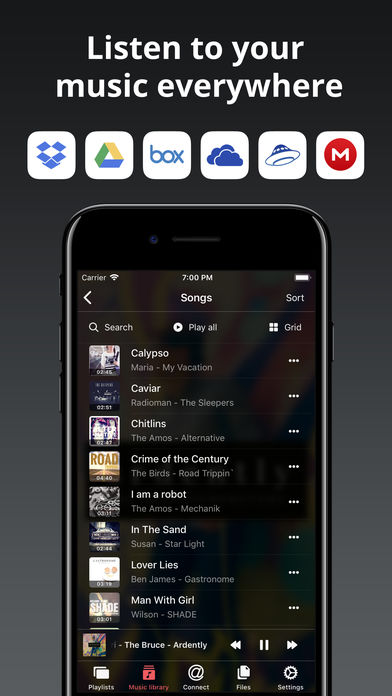

Preview

Description
Evermusic - music player and downloader for your iPhone or iPad.
Audio equalizer, bass booster, ID3 tags editor, playlists manager.
Evermusic is smart and powerful MP3 music player for Google Drive, Dropbox, OneDrive, Box, MEGA, Yandex.Disk, MediaFire, WebDAV, SMB, MyDrive, pCloud, HiDrive. With this app you can create your own music streaming service. Just move your music library to the network storage and listen to it directly from there without taking up any extra device space. All your music now available online and you can free up space on your iPhone for photos and new apps.
NAS, Wi-Fi Drive, SMB. Connect your MAC or PC using SMB and listen to your music directly from your computer. Advanced buffering technologies will provide smooth playback on your iPhone. You can also import audio files from your computer with iTunes File Sharing and Wi-Fi Disk.
Your music available offline. If you want to listen to your music without Internet just download all needed songs, albums, artists and listen to your music offline. You can also enable audio player cache and all recently played songs will be downloaded automatically.
Audio books. You can use Evermusic as audiobooks player because there are three useful features: audio bookmarks, playback speed control, saving of media position. Another great feature is sleep timer.
Crossfade playback. With this feature all your songs are playing continuously. There is no pause between songs during playback. You can also stream your music to Apple TV and Google Chromecast device.
Automatic synchronization. Your music library automatically synchronized between cloud storage and device. All songs are grouped by artist, album, genre. Evermusic has user friendly interface with different themes. It supports the most popular audio formats: mp3, aac, m4a, wav, aiff, m4r. Metadata reader will update your songs metadata very quickly. With music library backup feature you can backup all your playlists, songs, album artworks, application settings to the cloud storage and restore it from there.
Audio equalizer. This app has built in equalizer with different frequencies and iPod style presets for the most popular music genres: acoustic song, bass booster, classical music, dance music, electronic music, hip-hop, jazz, latin music, pop, piano, rock, small speakers. But you can also select manual equalizer settings and change preamplifier gain if you need to make your music sound louder.
Playlists manager. With Evermusic you can create and manage playlists, change songs order in playlist. You can make playlist available offline. You can sort songs in your playlist by name, size, song number, album.
ID3 tags editor. If you have corrupted metadata in your files you can edit audio tags using ID3 tags editor.
Files manager. You can manage your files located on the cloud storage using file manager. This application supports all basic operations: move, rename, delete, download from storage, upload to storage, create new directory.
Advanced search. Smart search engine will help you to find favorite albums, artists, songs in your music library.
* Please note that the app cannot play DRM protected files purchased on iTunes Store.
** Google Music service is not supported.
Audio equalizer, bass booster, ID3 tags editor, playlists manager.
Evermusic is smart and powerful MP3 music player for Google Drive, Dropbox, OneDrive, Box, MEGA, Yandex.Disk, MediaFire, WebDAV, SMB, MyDrive, pCloud, HiDrive. With this app you can create your own music streaming service. Just move your music library to the network storage and listen to it directly from there without taking up any extra device space. All your music now available online and you can free up space on your iPhone for photos and new apps.
NAS, Wi-Fi Drive, SMB. Connect your MAC or PC using SMB and listen to your music directly from your computer. Advanced buffering technologies will provide smooth playback on your iPhone. You can also import audio files from your computer with iTunes File Sharing and Wi-Fi Disk.
Your music available offline. If you want to listen to your music without Internet just download all needed songs, albums, artists and listen to your music offline. You can also enable audio player cache and all recently played songs will be downloaded automatically.
Audio books. You can use Evermusic as audiobooks player because there are three useful features: audio bookmarks, playback speed control, saving of media position. Another great feature is sleep timer.
Crossfade playback. With this feature all your songs are playing continuously. There is no pause between songs during playback. You can also stream your music to Apple TV and Google Chromecast device.
Automatic synchronization. Your music library automatically synchronized between cloud storage and device. All songs are grouped by artist, album, genre. Evermusic has user friendly interface with different themes. It supports the most popular audio formats: mp3, aac, m4a, wav, aiff, m4r. Metadata reader will update your songs metadata very quickly. With music library backup feature you can backup all your playlists, songs, album artworks, application settings to the cloud storage and restore it from there.
Audio equalizer. This app has built in equalizer with different frequencies and iPod style presets for the most popular music genres: acoustic song, bass booster, classical music, dance music, electronic music, hip-hop, jazz, latin music, pop, piano, rock, small speakers. But you can also select manual equalizer settings and change preamplifier gain if you need to make your music sound louder.
Playlists manager. With Evermusic you can create and manage playlists, change songs order in playlist. You can make playlist available offline. You can sort songs in your playlist by name, size, song number, album.
ID3 tags editor. If you have corrupted metadata in your files you can edit audio tags using ID3 tags editor.
Files manager. You can manage your files located on the cloud storage using file manager. This application supports all basic operations: move, rename, delete, download from storage, upload to storage, create new directory.
Advanced search. Smart search engine will help you to find favorite albums, artists, songs in your music library.
* Please note that the app cannot play DRM protected files purchased on iTunes Store.
** Google Music service is not supported.
Information
-
SellerArtem Meleshko
-
Size1 B
-
CategoriesPaid and Other Apps
-
Version3.5
-
Report App